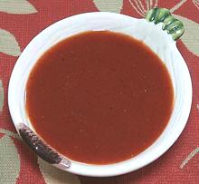

 |
French DressingNorth America | ||||
| Makes: Effort: Sched: DoAhead: |
1-3/4 cup ** 10 min Yes |
"French Dressing" is totally unrelated to anything French, it's strictly North American. This recipe is way better than bottled dressings, but see Comments. | |||
|
|
1/3 2/3 1/2 1/2 1/2 1/2 1/2 1/2 1/2 2 1/4 |
c c c c t t t t t t t |
Sugar Ketchup Oil (1) Vinegar, white Celery Seed Chili Powder Paprika Mustard dried Onion Powder Salt Pepper |
Make - (10 min)
|